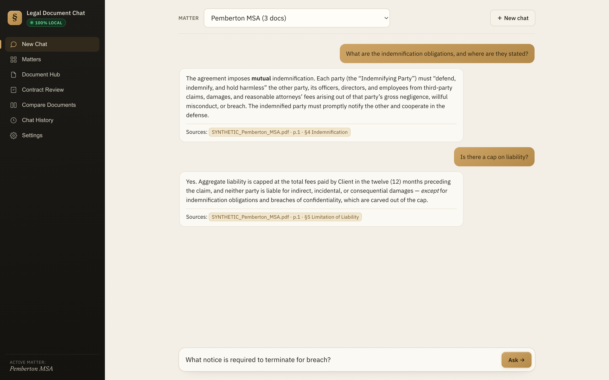

For attorneys & law offices · runs on your own computer
Ask your documents.
Get answers pinned to the page.
A private assistant that reads your contracts, pleadings, and exhibits and answers in plain English — with every fact tied to the exact line it came from. And it never leaves your Mac.
Free & open. No account. No sign-up.

Three things to install. Once.
The first-run wizard inside the app walks you through each one and checks them off. After setup, you can pull the network cable — it all runs offline.
-
i
Install Ollama — the local AI engine
A small, free engine that runs the AI models on your own machine. Download Ollama ↗
-
ii
Pull the two models
One reads and writes; one understands meaning. Paste these into Terminal once:
ollama pull qwen3:14b ollama pull bge-m3~10 GB total, downloaded once. This is the only time anything touches the internet.
-
iii
Download Legal Document Chat
Double-click to open it in its own window. Get the macOS app ↓
It cites the line — or it says it couldn't find it.
Most AI tools confidently invent citations. This one mechanically checks every quote against your actual document before it shows you. If the words aren't really there, the claim is dropped. You verify in one click.
-
Pinned to the source
Every answer carries the file, page, and the exact span — click to open the original at that spot, highlighted.
-
No invented citations
A span that doesn't mechanically match a real passage never appears as a citation. Honest "I couldn't find that" beats a confident fake.
-
Your matter stays your matter
Answers are scoped per matter — no bleed between clients. Nothing is uploaded, indexed in the cloud, or shared.
One-time setup downloads the models from the internet. After that, your documents stay 100% local — searched, read, and answered entirely on your computer. No cloud. No account. No telemetry.
Open it in a window, not a terminal.
Phase A is an unsigned developer build — macOS may ask you to confirm "Open" the first time. Still needs Ollama + the two models (the in-app wizard checks for you).